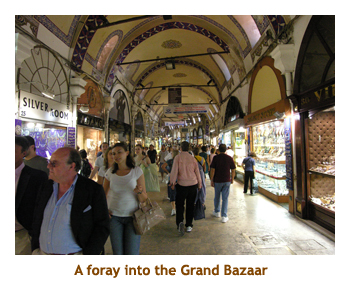
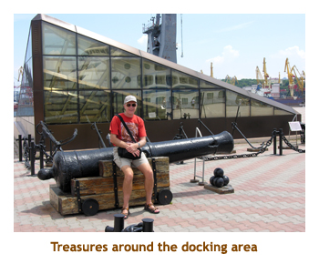
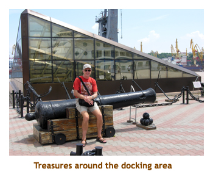

[ Home ] [ Travel ] [ Photography ] [ Pets ] [ Games] [ Rowing] [ Physics ]


Cruising on the Oceania Nautica
Travel
Cruises
Past Cruises (Diaries)
Future Cruises
Rogues Galleries
Land Trips
Diaries (Land Trips)
Hawai'i - Big Island - 04'01
Hawai'i - Maui - 05'02
Hawai'i - Big Island - 04'03
Hawai'i - Kaua'i - 09'04
Hawai'i - Big Island - 04'06
Hawai'i - Maui - 04'06
Mainland China - 05'07
Phoenix, Arizona - 12'07
Greek Isles - 05'08
Hawai'i - Kaua'i - 09'08
Hawai'i - Big Island - 09'09
Hawai'i - Maui - 05'12
Hawai'i - Big Island - 04'13
Ireland - 08'13
Mexico - Cancun 11'13
France/Belgium/Lux 07'15
Hawai'i - Big Island - 05'17
England / Wales - 06'17
Hawai'i - Big Island - 09'19
Photography
Cameras
Underwater
Pets
Tara
Blackie
Whitey
Muffy
Ollie
Rusty
Fluffy
Rufus&Dufus
Games
Rowing
Physics
Rating (out of 5): Ship  Food
Service
Itinerary
Food
Service
Itinerary
We booked this cruise for two reasons: firstly, the itinerary was marvelous and, secondly, it was a chance to try the upscale cruise line that everyone was raving about. As it turned out, the itinerary was marvelous, and the ship was excellent.
The Black Sea was always a mystical place, the ports being a world away. However, after reading Charles King's "History of the Black Sea", the area seemed much closer to home. As it turned out, we loved every port, although the city of Constanta was generally the least desireable. This was a very port intensive cruise, starting with 9 consecutive ports before hitting the first (and only) sea day. Couldn't complain about not visiting enough ports! For anyone following along on a map, you will see that we did not just circle the perimeter of the sea (which would have been the shortest route), but rather did a "figure eight" route that took us twice across the middle of the Black Sea.
The ship was as nice as any we have been on. However, I didn't find it to be a notch above the others as we were led to believe. The ship boasted a very loyal crowd of "small ship lovers" who shuddered at the thought of travelling on a ship with more than 700 passengers. As I always say, when you're in your stateroom, they're all the same size! A number of others who were also first time Oceania'ers agreed with us that the advantages of a small ship (fewer lineups, more intimate feel, etc) were offset by the missing larger ship advantages (more amenities, more open space, etc). The entertainment is certainly different than the main lines. It is presented in a lounge (not a theatre!). There is no troup of singers / dancers, although there is a 5 or 6 piece band. The entertainers are actually part of the cruise directors staff - no big names are brought aboard to please the passengers. The service in the dining room and cabins was wonderful, but no better than the big cruise lines. Most (including Marj) felt that the food was noticeably better, but I have loved the food on previous cruises, and loved this food as well, so I would rate it a tie. The only amenities not found on the regular lines are the availability of free bottled water, soda pop, fruit juices and the milkshake / smoothie bar. Offsetting this, internet charges and shore excursions are more expensive. Oceania cruise pricing tends to be more expensive than the biggies without necessarily being a better product, so book it for the unique itinerary or look for a good deal to make it worthwhile.
Be sure to look at the diary of the Pacific
Princess for a discussion of the ship as it is identical to the Nautica
(ie. old Rennaisance ship).
Pre-cruise (Jun 15, 16) - Travel to Istanbul
The airport shuttle service picked us up at our home at 10:00 AM. We had a bit of a wait at the airport as our flight to Frankfurt was at 1:30 PM. The flight was about 9 hours. Our great circle route took us north of the "night line", so it was daylight all the way. May as well be, as neither of us could sleep anyway. In Frankfurt we were tricked by a gate change. It's a strange airport in that all of the gate waiting rooms are locked and are only opened up an hour before the flight. If you get there early, the room is locked and there's nothing to identify what flight is at the gate. Anyway, we found our correct gate and had about a two hour wait.
The flight
to Istanbul was about 3 hours and we landed about 11:30 AM. We went straight to the visa office to buy
our temporary visa, and then headed through customs. Customs was easy, and then we went to
the baggage carousel to get our bags. We were worried for a while in that our bags weren't there,
until we realized we were at the wrong carousel! Entering the greeting area, there were crowds of people
with greeting signs so I had to walk back and forth a couple of times until I located the sign with our names
on it. We boarded a small van and were transported to the Arena Hotel.
The hotel was overbooked, so we were located in another building (the "Otto House") one block away. It was fine. I knew that the hotel was close to where we had stayed in 2006, but the Hotel Daphne was kitty-corner from our room! So, we knew the area quite well. Although we were tired from not sleeping, we decided to do a walk around of the area. We walked across the street to visit the Sokollu Mehmet Pasha Mosque. We had done this mosque last time and loved the beautiful tile work. Then we headed downhill to find the Kucuk Ayasofya Mosque. We got lost for a bit but finally located it. Once again we had been there before, but just had to see this church from 527 AD again.
We wandered back to the hotel and I watched a bit of the World Cup Football
(Spain vs Switzerland). We had dinner at the hotel (lamb kabobs). Then
we walked about two blocks to the Hippodrome and the ancient monuments.
A brief walk around the Blue Mosque and the front of the Ayasofia and
it was time to head back to the hotel for bed. It was nice knowing our
way around from the previous visit, and we noticed a few things had changed.
The store at the corner of our hotel street was gone (turn at the "Efes"
sign) and was now a Chinese restaurant!
Pre-cruise (Jun 17) - A full day in Istanbul
Due to the time zone change, I woke up at 1:30 AM and tossed and turned until 5:30. Today we had booked a full day tour with Turista Travel. We had originally booked to do a tour to the city of Edirne, but were informed just before the cruise that the trip had been cancelled. So, this tour was a last minute choice and would take us the length of the Golden Horn. We had an early breakfast at the hotel and then a girl from the company met us in the lobby at 8:15. We had to walk the length of the hippodrome to their store front on the main street (near the Ayasofia). We were joined by Martin, a German tourist and another guide (Ufuk).
We drove along the Sea of Marmara and saw remains of the old city wall.
We stopped at a section of the wall called the "Seven
Towers", dating from the 11th century. There we climbed up to the
ramparts and walked around the wall. One of the towers housed a prison.
The view of the surrounding city was exceptional. Climbing down from the
walls was exciting as it was narrow stone steps with no hand railing.
Back in the van we drove out to the Church
of the Chora, built in the 5th century AD. The Chora Church was originally
built outside the walls of Constantinople, to the south of the Golden
Horn. Literally translated, the church's full name was the Church of the
Holy Saviour in the Country. The last part of that name, Chora, referring
to its location originally outside of the walls, became the shortened
name of the church. This is a beautiful church filled with wonderful mosaics.
The mosaics had been covered up by the Ottomans, but recently restored.
The church was very crowded, but we managed to view the entire site. There was a small
gift shop with wonderful picture books of the church, but I resisted!
Driving further along the old city walls, we stopped at the site of the Tekfur Palace. The Palace was constructed during the late 12th or early 13th centuries as part of the palace complex of Blachernae, where the Theodosian Walls join with the later walls of the suburb of Blachernae. Only the northern facade of the palace is still standing. Then we continued along to the Hancerli Church which is the headquarters of the Greek Orthodox church in Turkey. Then it was time for lunch. We stopped at a restaurant near the Eyup Mosque. I had lentil soup and a chicken stew (which was quite spicy). By this time it was very hot and humid!
After lunch we took a cable car up to Pierre Loti Hill. A cemetery lined
the slopes of the hill. At the top there was a famous restaurant, and a great view
of the city. We were near the western end of the Golden Horn, so could look back
the length of the horn to Topkapi and the Blue Mosque. We took the cable car
back down again and then
we toured the Eyup mosque. There was a huge crowd including many
little boys (6 to 9 years old) dressed in fancy costumes who were about to
be circumsized. The mosque was very busy with people praying. There was
a long lineup for the neighbouring mausoleam (for Abu Ayyub al-Ansari, the
companion and standard bearer of the Prophet Muhammad)
so we didn't go in there.
We left the mosque and drove to a nearby ferry terminal. There we boarded the ferry and toured the length of the Golden Horn, stopping finally by the Yeni Camii (New Mosque). The van met us at the dock and we were driven back to our hotel. It was only about 3:30 PM, so we did a walk around the hippodrome. On the way back we stopped into a small grocery store and the girl sold me a 500 ml Efes for 1 Euro (a good price). We popped back to the hotel and then headed to the main street for dinner. We found a sidewalk cafe where I had moussaka. We went back to the grocery store to get a few more beer for the ship, but the girl's father was there and he sold us 4 cans for 7 Euro. Not such a good deal!
Back at the hotel I watched the France vs Mexico game and then it was time for bed.
Day 1 (Jun 18) - Boarding the Nautica
Today was embarkation day, so we had nothing planned in the way of tours. Oh yes, it was also my birthday - the big 6-oh! We woke up about 5:30 AM and read for a while. Breakfast was served at 7:00. The hotel restaurant (outdoor) was on the street level and several small cats were roaming around. One was so friendly he kept jumping up on my chair as I was eating. Breakfast was typical Turkish - tomatoes, cucumber, yoghurt, cheese, breads and cereals. Very nice!
Because the ship was overnighting in Istanbul, there was no hurry to
board and, in fact, our boarding docs suggested not before 3:00 PM. Marj
overheard a group in the lobby who had a shuttle van booked for 2:00 and
asked if we could join them. Transfer solved. We walked to the hippodrome,
viewed the historic columns, admired the views of the Blue Mosque and
Ayasofia, visited the public fountain at the Topkapi gates and ended up
down the street at the entrance to
Gulhane Park.
We had not been in this park before, so strolled along a wide pathway through
the trees and flowers. It was a beautiful park. We must have spent an
hour or so walking the length of the pathway and back again. It was very
peaceful in the park. Then we wandered back through the hippodrome
again on our way to the hotel. We stopped to take photos of two of the
monuments - the Walled
Obelisk and the Obelisk
of Thutmose III. Then we continued on to our hotel room. There, we
packed our bags and then sat and read for a while. At lunch time we wandered
out into the streets looking for a place to eat. We found a sandwich shop
(the Saray Bufe) on a little side street, and the owner pulled us in and
showed us what we could have. Marj didn't want to have anything, but the
guy misunderstood me and prepared two sandwiches when I had only ordered one.
So we each had a "Gyro" chicken sandwich which was
very good. After lunch it was time to retrace our steps past the Blue
Mosque to meet our 2:00 pickup at the hotel.
It was a short ride to the docks and we walked straight onto the ship. There was no checkin at the terminal. Instead, we were sent to the Nautica Lounge where we checked in onboard. Now that is service! We were the only ones checking in so it went quickly. We checked out our room and then headed to the buffet for some fruit and a drink. Then we wandered the ship seeing how it compared to the Pacific Princess (identical ship). Dinner was "anytime dining", from 6:30 to 9:30. Even 6:30 was later than we normally liked to dine, so we were usually one of the first to arrive each night. Tonight I had the seafood stirfry which was excellent. We wandered around the ship for a while (no entertainment was scheduled) and went to be early. It was a wonderful birthday.
We weren't the only ship in town. Docked right behind us was the Equinox (which we had done to the Holyland last year), plus the Sea Spirit and the Wind Spirit.
Note: One nice perk on Oceania is that every cabin has a DVD player. The ship
boasts a huge repertoire of DVD movies that you can borrow (free of charge) at any time. We
never used this offering due to our port intensive schedule. We just didn't have time!
Day 2 (Jun 19) - A second day in Istanbul
We were still waking up early (about 5:30), so
we enjoyed the upper deck in the morning sun.
There was lots of boat traffic on the Bosphorus, and the city looked beautiful
bathed in the early morning sun. Today
we had a full day tour that was organized by one of the Cruise Critic folks. We had breakfast
at 7:00. Being a small ship, the buffet service area was a bit cramped, but there never seemed to
be long lineups for toast or omelettes. I ended up having an omelette "with everything" almost
every morning. After a couple of mornings, the omelette guy knew exactly what I wanted
without me asking. We met for the tour at 8:15. The tour bus was a 20 seater van, but there
were only 10 of us, so we had lots of room.
We headed off over the Galata Bridge, up the Bosphorus coast and then
over the Bosphorus Bridge to the Asian side of the city. We drove up to
a hillside park called Buyuk Camlica . The park is high up and affords
a wonderful view looking across the Bosphorus to the European side of
the city. We had visited this park in 2006 and the main pathway had been
lined with book
benches in the shape of open books, with printed excerpts from famous
Turkish writers and poets. This time they were all gone. We had seen one
of the benches two days earlier on our first tour which had surprised
me. It must be like the Calgary Cow competition several years ago where
the fiberglas cows dispersed throughout the city after the event. We had
a lovely time walking around the park. Last time it was cloudy and cool, this
time it was sunny and warm (ie. hot).
We headed back down from the park and stopped at the Beylerbeyi
Palace which is right under the Asian side of the Bosphorus Bridge. Of course the bridge was not there when the palace
was built. Beylerleyi Palace was commissioned by Sultan Abdulaziz (1830 -1876)
and built between 1861 and 1865 as a summer residence and a place to entertain
visiting heads of state. We were given an appointed time to enter the palace, and spent
our short wait walking arount the grounds and along the waterfront. In the old days, all of the
visitors would arrive by boat, so there were some fancy boat houses and entrance gates
along the water. The palace was beautiful inside with lots of paintings, original furniture,
chandeliers, etc. After a bit more of a wander around the grounds (and a pit stop), we
reboarded the bus and headed north up the Bosphorus shoreline. There were some
gorgeous (and expensive) houses along the route.
We stopped at a ferry terminal and left the bus. Across the street was
the Mihrimah Sultan
Mosque. We risked everything crossing the busy street and entered
the mosque. The Mihrimah Sultan Mosque was designed by Mimar Sinan ("Sinan the Architect")
for the favorite daughter of Suleiman the Magnificent, Princess Mihrimah. Its building took place
from 1562 to 1565.The courtyard had been converted to a medical clinic. The
interior of the mosque was beautiful. We had about a half hour to explore the mosque
and then we ran back across the street and bought tickets for the ferry. The ferry ride
was about half an hour and we arrived at the Yeni Mosque terminal ready for lunch.
We walked across the plaza to the Hamdi Restaurant. I had ground lamb kebabs
and they were the best I had ever had. Absolutely yummy!!

After lunch we visited the nearby Rustem Pasha Mosque, which we had seen on our previous trip to Istanbul (2006). The mosque was designed by Ottoman imperial architect Mimar Sinan for Grand Vizier Damat Rustem Pasha (husband of one of the daughters of Suleiman the Magnificent, Princess Mihrimah). Its building took place from 1561 to 1563.The interior is covered in beautiful Iznik tiles.
Then it was time to visit the Church of the Chora, which was our only repeat from the tour 2 days ago.
We didn't want to go in the church again, so instead just browsed around some shops across the
street from the church. Finally we headed towards Sultanahmet and did a quick foray into the Grand Bazaar.
The bazaar is huge, covering many city blocks and containing over 4,000 stores! You
could get lost forever in there! We headed back to the ship and arrived about 6:00 PM. Lifeboat
drill was at 5:15, so we had missed it. That's fine! I had rack of lamb for dinner, but the ship did not
have mint sauce - unheard of! We skipped the entertainment and went to bed early.
The ship was sailing at 11:00 PM, so we were fast asleep by then. We talked to others
later who
saw all the city lights and the transit under the two Bosphorus bridges. Sleep
was good too.
Day 3 (Jun 20) - Nessebur, Bulgaria
I woke up at our usual early time and, lo and behold, we were in Bulgaria. The ship was heading in to the harbour at Nessebur. The town is similar to Tallinn and Dubrovnik as there is a (very) old town separated from the new town. In this case "old" Nessebur is on a peninsula (almost an island) attached to the new city. Originally a Thracian settlement known as Menebria, the town became a Greek colony when settled by Dorians from Megara at the beginning of the 6th century BC, and was an important trading centre from then on.
We had joined a private tour for the day with a group from Cruise Critic. There were 10 of us.
This was the only port that we had to tender, so we met at 8:45
and proceeded to the tendering station. Arriving at the pier about 9:00, we met our guide for the day.
It was only a short walk from the pier to the old town. Along the docking area we saw the Michail
Lomonosov, a large Viking River Cruises ship. I talked to one of the staff and he told me they do
Odessa, Yalta and up the Dnepr River to Kiev. It was 5 decks high, so obviouslu did not
encounter any low bridges in its travels. Our first stop was at the archaeological museum. It was
very good, with objects dating back thousands of years.
After spending some time in the museum, we did a walking tour of the old town. The town was a
mix of souvenir / handicraft shops, restaurants and old Byzantine churches. We explored several
of the old churches, all of them in ruins or restored but not in use. [Visited St Sofia (old Bishopric) - 5th century,
Church of John the Baptist - 11th century, Church of St. Theodore - 13th century, Church of Christ Pantocrator -
13th century, Church of St John Aliturgetos - 14th century]. It was a beautiful blue sky day and the
Byzantine structures looked amazing, bathed in the sun's glow. We spent about one and a half
hours walking around the old town. It was very hot, so we headed for any shade we could find when
listening to the guide. We walked back to the entrance gates of the old town and our van was waiting for us.
It was about 11:30 and we were off to the country to visit a monastery and do a wine tasting.
We drove south along the coast towards Pomorie. Out in nowhere we came upon the Monastery of Sveti Georgi (St. George). There was a church, a chapel, a bell tower and a residence building. There was a baptism happening in the church with lots of young people attending. The monks support the monastery by making and selling a type of brandy (can't remember the flavour). We were invited in for a tasting, but it turned out that they didn't have any serving glasses, and everyone just drank from a shared, small vial. We all said "no thanks" and headed back out into the courtyard.
From there we drove to a group of beautiful seaside hotels where a wine tasting was set up for us.
This time we had real glasses, and a plate each of sliced meats and cheeses. The wine was
pleasant and the food was delicious. Then it was time to drive back to the ship. We caught the
tender back to the ship and were onboard by about 3:00 PM. We hadn't really
had lunch, so headed to the milkshake bar for a chocolate banana shake. Oceania provides
shakes, malteds and smoothies for free!. This night we had dinner at the Polo Grill specialty
restaurant. (The Polo Grill and Toscana Restaurant are free of charge. Passengers get one
guaranteed seating in each restaurant and after that it is subject to availability). I had
a huge lobster. It was delicious. We skipped the entertainment and headed to bed early.
It was a great day and now I've seen everything there is to see in Bulgaria.
Day 4 (Jun 21) - Constanta, Romania
Another day, another country. We woke up early again to watch the ship
come into Constanta Harbour. An omelette "with everything" was consumed
at 7:00 AM. This time we were doing a ship's tour, and met in the lounge
at 8:00. It was a big bus of about 40 people. We did a bit of a tour
through the city of Constanta. It was a mix of newer buildings and crumbling
Soviet era cement buildings. All in all, it wasn't a pleasant city. We
drove north up the coast for just over an hour and came to the ancient
Greek/Roman town of Histria.
The countryside was very interesting. There was a mix of industry and
agriculture. Some of the industrial complexes seemed abandoned, while
others were active. We arrived at Histria just after 9:00. Ancient Histria or Istros
(Thracian river god, Danube), was a Greek colony or polis (city) on the
Black Sea coast, established by Milesian settlers to trade with the native Getae. It became the first
Greek town on the present day Romanian territory.
The first activity we did at Histria was touring an excellent archaeological museum. The rooms were very large and everything was nicely displayed. Most of the artifacts were from the Greek (3rd - 1st centuries BC) and the Roman era (1st to 3rd centuries AD). Then, we left the museum and wandered through the ruins of the ancient city. It was very hot and humid! The largest ruin was that of a Bishopric Basilica (Byzantine) from the 6th century AD. Very near the site were a few modern houses, and there was a stork's nest upon a power pole. Storks are huge!
We drove back into town and visited a folklore museum, with a vast collection of native clothing. It was very interesting. We were back to the ship by 12:30, and had a chinese buffet (what does that have to do with Romania?) and a malted milk. After lunch we wandered out to the terminal building on the dock where they had free wi-fi. Marj did her Cruise Desk stuff qand then we read for a while. We decided to go to trivia at 4:30 where we met a New Zealand couple (Peter and Halcyon) who would become good friends throughout the cruise. That's one big plus about cruising that you meet so many wonderful people! We actually won and got 3 Big-O Points for each team member. The points could be collected throughout the cruise and then cashed in for awesome treasures like t-shirts and ball caps.
For dinner I had beef tenderloin - yum! Then we did the evening
trivia (more Big-O Points). We actually stayed
up for the entertainment (Polish violinist) and didn't hit the hay until 10:30.
It was a really great day. I'm glad we didn't just walk around Constanta for the day as we
heard some bad feedback from several passengers. A number of passengers had
been robbed in various incidents ashore. Not a nice or safe city!
Day 5 (Jun 22) - Odessa, Ukraine
Today we arrived in the Ukraine. We were up early as usual and wached
the ship dock in the harbour. 7:00 AM was once again omelette time. We
had booked a tour of Odessa
through the ship but Marj had decided a couple of days ago that she couldn't
handle so many tours in a row. So, she had cancelled and I was going it
on my own (with 40 others!). Marj walked around the town (much safer than
Constanta) while I headed off on the bus (9:00 AM). We drove through the
town passing a number of beautiful buildings and statues of local dignitaries.
Our first stop was at the Potemkin
Steps where "The Battleship Potemkin" was filmed in 1925 by the great Russian
director Sergei Eisenstein. The steps are built such that from the bottom you see only steps, and
from the top you see only landings.
 

We walked a few blocks from the steps and came to the Odessa Opera House. What an amazing building! Then we bused it to the memorial to the unknown sailor. Today was June 22 which is the day the Nazis invaded Odessa. There is an annual memorial on this date and the cenotaph was covered in wreaths. 5 high school students in uniform guarded the monument, and a TV station was filming the events. Then we drove to the Uspensky Cathedral, but could only enter the chapel in the basement as a service of some sort was being held in the main part of the church. Finally we visited an art museum featuring some famous 18th and 19th century Ukrainian artists.
We were back at the ship by 1:00 PM. Marjorie arrived back shortly after,
and had seen some of the same things we saw on the tour. The town is quite
walkable! We had lunch and then went back out to the dock area which featured
a large paving stone square with sculptures, canons, etc. It was quite
hot there, so we went back into the ship to read for a while. Trivia with
P&H was at 4:30, then off to dinner. I had a seafood stirfry which was
excellent. We did the 8:45 trivia for more Big-O
Points, but skipped the entertainment (comedian). Off to bed at
10:00. Another wonderful day. Note: Our daily newsletter has
been forecasting rain every day, but so far we've had scattered cloud, sun
and hot, hot, hot!
Day 6 (Jun 23) - Sevastopol, Ukraine
Today would be our second day in the Ukraine. Overnight we had relocated to Sevastopol. Up early, we walked the upper deck as we approached the harbour. Sevastopol is the HQ of the Russian navy, so there were lots of grey ships at dock. As an aside, the whole of Crimea and some of southern Ukraine is of Russian heritage. The locals speak Russian and the schools are taught in Russian. A bit like Quebec is to English speaking Canadians. So, even though we were in the Ukraine, it felt like being in Russia.
We were booked for a private tour (6 people) and boarded a small van
at 9:00 AM. The van was very basic - no A/C or even opening windows. It
was certainly the worst transportation we have ever had on a private tour.
We drove through the town and stopped at a building called "The
Panorama". Inside the circular domed building, was a 360 degree panarama
of the Defense
of Sevastopol from the vantage point of the Russian encampment on
"the mound" (a large hill). From the viewing platform outwards, real foxholes,
encampments, barricades, canons, etc were visible. At some point, the ground meets
the fabrick of the dome on which the remainder of the battle scene is
painted. The transition is done so well that you couldn't tell where reality
ended and the painting began. It was absolutely amazing and put you in
the center of the battle.
After leaving the panorama, we drove a short distance to the actual hill where the battle occured. All the trees and singing birds made it difficult to imaging the war horrors, but the long range view was the same. Then we headed to the harbour to see the monument to the "scuttled ships". During the Crimean war, Admiral Nakhimov (Russian) scuttled the Russian navy ships so that the French and English troops could not capture them. Then it was back to the cruise ship, arriving about 1:15. Fortunately, no one had scuttled it! We headed aboard for some lunch and milkshakes. For most of the afternoon we sat out on the promenade deck and watched the boat traffic in the harbour. It was a beautiful sunny afternoon. Trivia with P&H was at 4:30 (more BIG-O Points). For dinner I had prime rib. It was excellent. Late trivia was at 9:15. The entertainment was a singer (country & western), but we didn't go.
Off Topic Note: I have been watching the World Cup games just
before dinner each night. The ship is picking up the games from a Turkish
station called TRTT. The announcing, commercials, etc are all in Turkish.
The time clock / score bar widget on the screen shows the three letter
abbreviations of the competing teams, based on the Turkish names of the
countries. It was fun trying to guess who was playing. For example, one
time it showed "YUN". I couldn't figure out what country that was. It
turned out to be Greece. The Turkish name for Greece is Yunanistan.
Day 7 (Jun 24) - Sinop, Turkey
Overnight we had crossed the center of the Black Sea from North to South. Up at
6:00, we watched the ship dock at Sinop. It was quite overcast, but supposed to clear up later. It did!
We were booked for a private tour with some CC folks. There were 10 of us who met at 8:45
ready for our 9:00 departure. The guide met us at the ship with a comfortable van with A/C!
The town of Sinop is on a peninsula (called the Sinop Peninsula). We drove through the town and
on to the mainland, passing through the Pasha Bastions - gates and walls built to stop sea
raids in the 19th century. We passed out of the town and drove up the slopes of an adjacent hill.
Our first stop was looking down at a small black sand beach, then further on we stopped for a
panoramic view of the city.
After taking some pictures of the city (and the cruise ship), we headed back down the hill
and into the city. There we stopped at the Sinop Archaeological Museum. The museum was
excellent and covered the Greek and Roman periods, as well as the Byzantine and Ottoman
eras. Outside there were lots of Greek / Roman remnants, plus grave markers from an
Ottoman period cemetery. Leaving the museum, we drove to another one - the Sinop
Ethnographical Museum. This was in a three story wooden house which was typical of the
upper class homes. Two of the floor were open and the rooms had been decorated (including manikins)
in the original style. There were rooms for men and rooms for women. Very interesting!
After leaving the museums, we drove to the Alaaddin Mosque complex. Across the street
was the Muslim Theological School (Medrese),
which was built by the Seljuk vizier Suleyman Pervane
upon his victory over Sinop in 1262. It is now a market place so we were given a chance to
do a bit of shopping or have some tea. We weren't intrested in shopping, so just
sat down and rested. It was interesting watching the locals shop.
Then we walked to the mosque across the street.
The Alaaddin Mosque was a five dome-shaped building built in 1214
during the Seljuk period.
The mosque had been recently renovated. The interior was just white plaster - no
decoration at all. This was very unusual for a mosque! Maybe it was waiting to be
decorated as part of the renovation. In the courtyard, a group of children were
playing soccer, ignoring the flower gardens and ancient monuments. There
was a large public fountain in the center of the courtyard, covered by a wooden roof
- again unusual decor for a mosque.

Then we drove west to the northernmost tip of Turkey. We stopped at an
inlet of water called the Hamsilos Fjord. It was only a kilometer or two
long, so in Norway would not qualify as a fjord! The fjord widened out
into Ak Liman Bay. Nearby, we stopped at an ourdoor restaurant for lunch.
They had a good selection of food (I had kebabs) and the prices were resonable.
I ordered a dark Efes beer, but received the Pilsen version. I don't
think the waiter understood what I was asking. It was very nice sitting outdoors
overlooking the ocean. Then it was time to head back into town.
After winding back through the town, we arrived at the waterfront. Right near the ship were the old town walls, and the south Sinop Castle. We scrambled up the stairs and were rewarded with a wonderful view of the waterfront and the city (and the ship!). At the base of the castle were some handicraft stores, two of them being wooden model ship shops. The small models were amazing. No room in my suitcase though.
Saying goodby to our tour guide, we headed aboard in time for 5:00 PM
trivia. Tonight we were booked for Toscana. I had veal picatta and it
was really good. We played 8:45 trivia (love those BIG-O
Points), skipped the entertainment and headed to bed.
Day 8 (Jun 25) - Trabzon, Turkey
Our second day in Turkey found us in the city of Trabzon. We rose early
and watched the ship come into port. It was going to be another hot and
humid day! 7:00 was omelette time. I've really been enjoying my daily
omelette. I also have a variety of cut up fruit with it. Yum! Today we
were on another private tour, with the same guide, Eylem, that we had
on the second full day in Istanbul. He was very good, so we were pleased
to have him again. The 12 of us boarded a 20 passenger van and headed
south into the mountains. It was beautiful, much like the BC mountains.
As we headed up, the hot and humid was replaced with cool and dry. Alongside
us was a rushing mountain stream. After an hour or so we came to a lookout
point from which we could see the Sumela
Monastery hanging from a cliff. Lying at an altitude of approximately
1200 metres, it is a major tourist attraction of Altindere National Park.
Founded in the year 386 AD during the reign of the Emperor Theodosius
I (375 - 395) legend has it that two priests undertook the founding of
the monastery on the site after having discovered a miraculous icon of
the Virgin Mary in a cave on the mountain.
The trail to the monastery was quite tricky - some spots were just dirt and tree roots.
One fellow in our group tripped and fell, dislocating his shoulder. He had to visit the hospital
in the afternoon to have it reset. Along the pathway was a Turkish peasant playing a violin-like
instrument call a Karadeniz Kemencesi. Someone took my picture sitting beside him.
Once we got to the base of the monastery, we had to climb
two steep sets of stairs to the entrance. From a distance one can only see the tall buildings that
look like they are flush to the cliff wall. However, there is a huge cavelike structure behind in which
there is a small town. The Rock Church was especially interesting, covered with
religious frescos inside and out. We were given about an hour to explore all the little buildings and
check out the view overlooking the valley. It was really an amazing complex. Leaving the monastery
behind we headed back along the mountain road.
Part way down we stopped at a hotel/restaurant beside the mountain stream for tea. Then we continued back into Trabzon. There our destination was the summer home of Ataturk, Turkey's national hero. The mansion and gardens were really beautiful. From there, the van dropped us off for lunch at the ship. I don't know who orchestrated this, but it was kind of nice to be able to "freshen up" and have lunch on board. After an hour, we were picked up by the van to continue our tour. We travelled through town to the Hagia Sophia Church. The Hagia Sophia, now the Hagia Sophia Museum, is a former church and mosque located in the city of Trabzon. It dates back to the 13th century when Trabzon was the capital of the Empire of Trebizond. It was an interesting church with beautiful ceiling frescos.
Then it was a stop at the downtown section of Trabzon for a bit of shopping. All we got
was a jar of hazelnut spread. The streets were packed with local shoppers and it was interesting
to watch them buzzing about, some in traditional garb, but carrying bags of Western
electronics, etc. Then it was back to the ship. There was no afternoon trivia today.
Instead, they had a folkloric show with a local Turkish musician and dance group. We
didn't stay for the whole show, but it was pretty good.
For dinner I had shrimp stirfry. We managed 8:45 trivia, but skipped the singer and went to bed.
Another wonderful day! We had to put our clocks ahead one hour tonight for Russia.
Day 9 (Jun 26) - Sochi, Russia
At last we made it to the city of the 2014 Olympics. Yes, today we arrived
in Russia, at the port of Sochi. We woke up an hour late, but this was
probably because we had put our clocks forward. Breakfast was at 7:00 and
then we met for the private tour at 9:15. 12 of us boarded the van at
9:30 with a pleasant guide who spoke excellent English. Sochi was a real
surprise as it was sub-tropical, with beautiful tree-lined streets, well
kept buildings and parkland along the ocean front. It was obviously the
playground of the Russian rich and famous. Our first stop was at the Cathedral
of St. Michael the Archangel. This church is the oldest Orthodox church
in Sochi and the entire Black Sea Oblast of the former Russian Empire.
Its construction was decreed by Grand Duke Michael Nikolaevich of Russia
with a view to commemorating the victorious conclusion of the prolonged
Caucasian War in 1864. There were actually several buildings including
a gazebo, a baptistry and a sunday school. We couldn't go in the church
as there was a service in progress.
A short drive away, we parked and did a walk along the oceanfront. The whole area was a park with trees and paving stones. The buildings were modern and well-kept. At the end of the walk we came upon the museum of art. The Sochi Art Museum occupies a large building with a four-columned portico, completed in 1939. The elegant Neoclassical design is considered to be the masterpiece of Ivan Zholtovsky.
We walked back along the same path to the waiting bus. Besides seing
various palm trees, there were the most gorgeous magnolia trees with
blossoms that must have been almost a foot in diameter. We had seen similar
trees in Australia.
We drove out of the city a bit to a mineral water spa called Matsesta. There are numerous spas (or sanitariums) that have been built in the area to take advantage of the natural mineral waters. From their own description:
Matsesta, meaning 'fire water', has harnessed the powers of the hot sulphur springs that have become synonymous with Sochi and become the city's most renowned health spa. The water contains over 27 types of minerals and is used to treat people with respiratory and cardiac problems. Featuring a number of bathing rooms, massage tables and inhalation cubicles, Matsesta Spa is a major tourist attraction.
After visiting the spa, we drove to a mansion that was Stalin's Dacha or
summer home. It was spartan inside (the way Stalin kept it) and the cement exterior
was stained green for camouflage from the air (Stalin was paranoid). It seemed grim to
me knowing what Stalin had done to his people, but it is still part of the Russian history.

For the final part of the tour, we drove to Riviera Park. Just by the entrance to the park is the "Tree of Friendship" garden where magnolia trees have been planted by astronauts, cosmonauts, foreign dignitaries, famous people, etc. Next to this is a large garden / fountain memorial to the doctors and nurses that worked in the sanitariums during the Great War.
Riviera Park was the closest thing I have seen to Tivoli Gardens in Copenhagen.
It has roller coasters, ferris wheels and other rides, beautiful gardens,
restaurants, photo places with period costumes, and more! Walking through
the park we met Disney and spongebob characters mixing with the children.
What a park! Then it was back to the ship in time for a late lunch (milkshake)
and afternoon trivia (more BIG-O Points). For dinner
I had the roast turkey. There was no evening trivia due to a special "From Russia with Love"
sales event, so we wandered the ship and watched
the soccer match. (By the way, we're in the same timezone as South Africa, so we see the
games at the same time as they are scheduled in SA.)
It was another wonderful day. We set the clocks back an hour tonight getting
ready for the Ukraine tomorrow.
Day 10 (Jun 27) - Yalta, Ukraine
Clocks back, an extra hour's sleep! Yeah right - up at 5:30 to watch
the ship come into port. This was our last Black Sea port (and the 9th
port in a row!). We had our usual breakfast at 7:00, and then got ready
for our tour. We had booked another private tour with some CC folks. We
met in the atrium at 8:15 and boarded the van at 8:30. There were 10 of
us in the large van, and our guide was very good. We were back on the
Crimean Peninsula so Yalta, despite being in the Ukraine, was very Russian.
As we disembarked from the ship, there was our friend, the Mikhail Lomonosov
docked with us again. We loaded into the van and drove to our first stop
at the Livadia Palace.
This is the place where the Yalta Conference was held as Roosevelt, Churchill
and Stalin divvied up post-war Europe. The palace was interesting, but there were
very few original furnishings due to its use as a mental hospital during the
Communist years. However, there were lots of photos relating to the Yalta
Conference.
Leaving the palace, we boarded the van and drove along the coast. Our next stop was a viewpoint overlooking the famous Swallow's Nest Castle. The building is a decorative castle, built between 1911 and 1912 near Gaspra. It is on top of 40-meter (130 ft) high Aurora Cliff, constructed to a Neo-Gothic design by the Russian architect Leonid Sherwood. The lookout area was a mass of souvenir stalls and fast food booths. Very commercial! The area was really packed with people too, as Viking Cruises had several of their own large tour buses there.
Next we travelled on to the small resort town of Alupka, and the
Vorontsov
Palace. Mikhail Vorontsov was governor of southern Russia (which included also the
Crimean peninsula) in the early 19th century. Vorontsov's Castle, built in five different
architectural styles (actually different from each side) is well kept and has a small art gallery.
The rooms were beautifully decorated as this palace did not suffer the indignity of
being converted into a hospital.
Churchill stayed at this palace during the Yalta Conference.
After tromping around the palace grounds, we were on the road again, this time headed to the home of Anton Chekhov. Chekhov is well-known for his short fiction and plays, particularly The Cherry Orchard, The Three Sisters, and The Bishop. The home was quite small (after the palaces). During WWII, the house was spared destruction by the Nazis because there was some kind of connection between Chekhov and Hitler (via marriages and relatives). The surrounding gardens were quite interesting as Chekhov loved trees and had planted many unique species in the garden.
Our final destination was the Alexander Nevsky Cathedral, a large orthodox church. It was bright white with shiny gold onion domes. With the blue sky behind it, it sparkled like a giant gem. There was a small group of people sitting in the courtyard singing a religious choral work. It was awesome! We had about half an hour there, but I could have stayed all day looking at the church and listening to the music!
We were back at the ship for a late lunch, and then on to 3:30 trivia.
We were still enjoying playing with Peter and Halcyon, and wouldn't have
scored nearly as well without them. We really owed them big time for our
BIG-O Points! We had dinner at the
main dining room, and I had the ??? - oh man, I can't remember. Time to get
off the ship! I've cruised too much! We did the evening trivia then off
to bed.
Day 11 (Jun 28) - Cruising the Bosphorus and Dardenelles
Today we woke up to - what? - a "day at sea". Yahoo! After 9 days in a row of doing tours (11 actually counting Istanbul), today was to be a day of rest. We actually slept in a bit and got up about 7:00 AM. We had breakfast and then sat on the promenade deck to read. It was a glorious sunny day. From approximately 9:00 to 10:30 AM we would be sailing down the Bosphorus (in the daylight!!), so we went to the upper deck to watch the passage. Marjorie stood in one of the cabanna units (looking forward) while I was at the railing looking off to the starboard side. The morning sun was shining from the Asian side (east), so the best lighting for pictures was on the European side. The Bosphorus is about 30 km long and averages about 1 km wide - so you are never far from either side. The straight is just that - fairly straight, so from the Black Sea entrance (north end) one can see Istanbul at the south end.
I was lucky I went up early to get a railing spot as it filled up quickly. I got
lots of pictures of the houses, palaces and mosques along the way. The only
problem with holding my railing spot is that I wasn't able to run to the port side
when passing the Asian Fortress and the Beylerbeyi Palace. Oh well, you
can't see it all! It was wonderful as we passed the Sultanahmet area of the city.
I could pick out Hagia Sophia, the Blue Mosque, Topkapi Palace, the
Yeni Mosque, the Suleymaniye Mosque, and even Gulhane park,
where we had walked a week earlier. It was a gorgeous site! Then we
sailed out into the sea of Marmara and the shorelines became lost in
the haze.
We read some more and then went for lunch. After lunch I watched a soccer match and then wandered around the ship. At 4:30 it was trivia time - more BIG-O Points for all. From 5:00 to 6:00 PM we would be sailing through the Dardenelles so we headed out to the promenade deck (shaded) and stood with Peter and Halcyon as we sailed from Gallipoli to Canakkale. Along the way were several fortresses, plus war memorials to Turkey, England and France. The ANZAC memorial was not visible to us. Some day we will have to do an excursion to Canakkale to see the memorials up close.
As we sailed out of the Dardenalles and into the Mediteranean Ocean
(also called the Aegean Sea locally), we headed off to dinner. I had lamb shank.
Very good! There was another trivia session at 8:45. Can't remember if we won anything
or not. Wandered around the ship some more and then headed to bed.
It was really nice to have such a relaxing day for once.
Day 12 (Jun 29) - Kusadasi, Turkey
Woke up early this morning and it was back to our regular schedule. We
headed up to the upper deck to watch the ship dock in Kusadasi. This would
be our third time to Kusadasi. The fortress island in the harbour looked
awesome in the morning sun. There were several ships in port, including
the Splendor of the Seas, and the Equinox. Breakfast was at 7:00 as usual.
We had a ship's tour booked and met at 8:00 AM in the Nautica Lounge.
We were going south to visit two ancient Greek / Roman sites call Miletus
and Didyma. We headed out to the bus. This tour musn't have been popular
as there were only about 15 of us on a bus for 45. We had lots of room!
The drive south took about an hour. We passed through the village of
Priene
(but didn't stop) along the way. Finally we came to the site of
Miletus. Miletus is
an ancient city dating back thousands of years. However, the bulk of
the ruins that we walked through are Greek or Roman, with some later
Byzantine buildings as well. The most complete (and largest) structure was
a Roman theatre. We enjoyed seeing the layout of the city, but it was very hot and humid.
Phew! After returning to the bus parking area, we browsed some souvenir booths nearby.
Marjorie bought a small decorated candy dish as a momento. Then it was back
in the bus and off to Didyma.
It was only a short distance to Didyma.
Whereas Miletus was a town, Didyma was a religious site. We parked the
bus a short distance away and had to walk along a village road to the
site. As it came into view I could see that it was enormous. The site
is actually a single temple that is the largest Greeek temple that I can
remember seeing. It reminded me of the Luxor and Karnak temples in Egypt.
The temple was not completed (6th century BC), and had been destroyed
by the Persians in 494 BC. However, enough of the structure is remaining
to show the awesome dimensions of the temple. We spent another hour exploring
the ruins, plus did a bit of shopping at some nearby stores. Then it was
time to get back into the air conditioned bus (yahoo!) and drive back
to Kusadasi. We elected not to stay in town as we had toured the local
streets twice before. Instead we headed back onto the ship for a late
lunch and milkshake. The final "payout" trivia was at 4:00 PM, and at
5:00 PM there was a session to cash in BIG-O Points
for merchandise. Marjorie and I pooled our points and had enough to
purchase a t-shirt!! Woohoo!! Plus we had points left over that Marjorie is
saving for our next Oceania cruise in November. For dinner I had seafood stuff.
It was excellent. Then we had a final non-payout trivia session at 8:45 - just for fun!
Then it was time for a wander outside, then off to bed.
Day 13 (Jun 30) - Athens, Greece and Home

Oh man, the cruise is over! We woke up this morning to rain. It was the first real rain we had for the entire cruise. Our weather had been excellent. Anyway, we were docked in Pireaus, ready to disembark and head to Athens airport. We had our final breakfast and said goodbye to all the folks we had becomes friends with. Peter and Halcyon were doing the first leg to Heathrow with us, and were then transfering to London for an overnight stay and a visit with their daughter. We had a long layover waiting for our 1:30 flight to Frankfurt (on British Airways). The flight was about 4 hours long and we arrived in Heathrow ontime. We said goodbye to P&H and found our way to the gate for our next leg to Calgary. This was a 9 hour flight and we arrived in Calgary about 8:00 PM. Chrissy and Matt were there to pick us up and drive us home. They (and Minnie) were staying overnight with us as they were heading off to Nanaimo the next day for a wedding, and we were looking after Minnie for them. Once again I got that strange feeling where this morning we were in Athens (I saw the Olympiacos football stadium) and here I was in Calgary now. Strange.
This was an absolutely amazing, wonderful cruise. Loved the ports, loved the people, loved the food, loved the ship - what more could you ask? Glad to be home though, getting ready for our next cruise in two weeks.